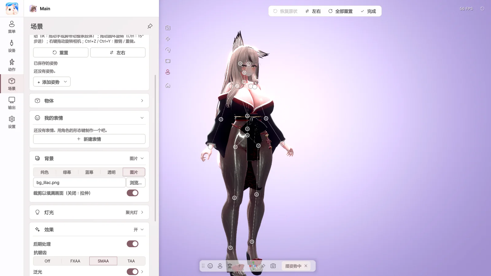
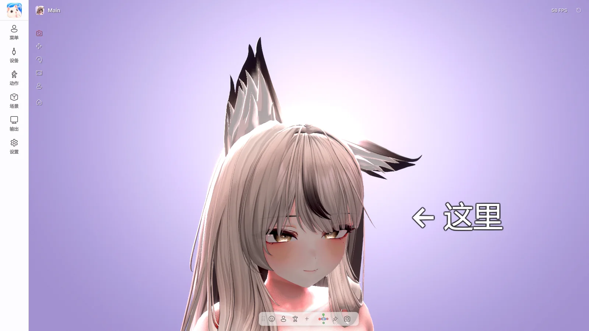

11. 摆姿势 · 物体 · 表情
摆姿势

开启 场景 › 摆姿势 › 摆姿势模式 后，可以直接移动骨骼来摆出姿势。
- 点击骨骼进行选择，拖动即可移动。拖动手或脚时，整条手臂 · 腿会随之移动。
- 拖动圆环即可旋转。
- 左右 — 翻转或复制左右两侧的姿势。
- 用 + 添加姿势 › 保存当前姿势 保存后，可在角色菜单的 姿势 卡片中直接开启。
- 也可以导入在 Unity 中制作的
.anim文件。
关闭摆姿势模式前，请先保存姿势。
物体

通过 场景 › 物体 › + 添加物体 放置文字、图片、形状和 3D 模型。
- 将 附着位置 设为头部或手，物体就会随角色一起移动。
- 双击文字即可直接编辑。
- 3D 模型需要在 Unity 中通过 Curious Bobby → Prop Exporter 制作成
.vprop文件后使用。
屏幕共享更多来源
可以在屏幕共享中叠加更多窗口或显示器。适合同时展示聊天窗口或音乐播放器等。
我的表情
用角色的形态键制作属于自己的表情。
- 点击 新建表情。
- 搜索形态键，用 + 添加并调整强度。
- 点击 保存 后，即可在角色菜单的 我的表情 卡片中点击开启。
自动表情
微笑或惊讶时，会自动显示预先设定的表情。在 动作 › 自动表情 中开启，并为微笑 · 惊讶 · 眨眼等每种表情关联要显示的表情。